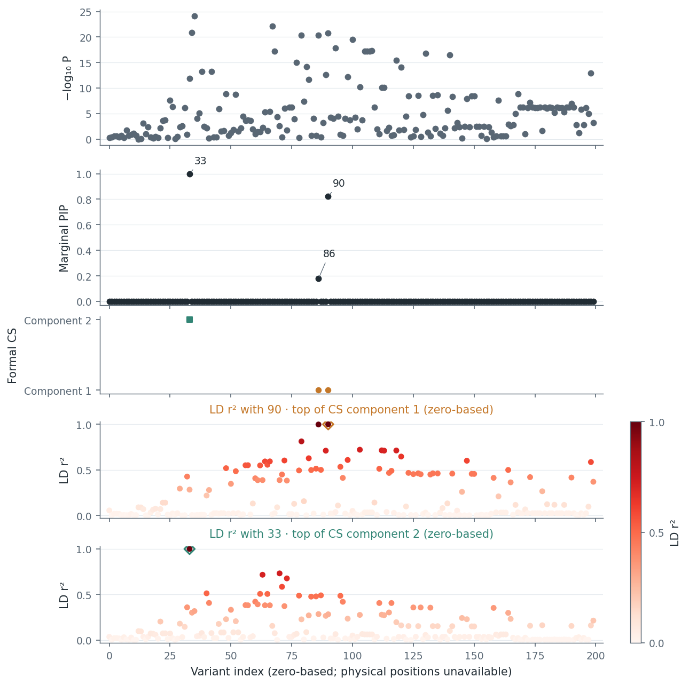
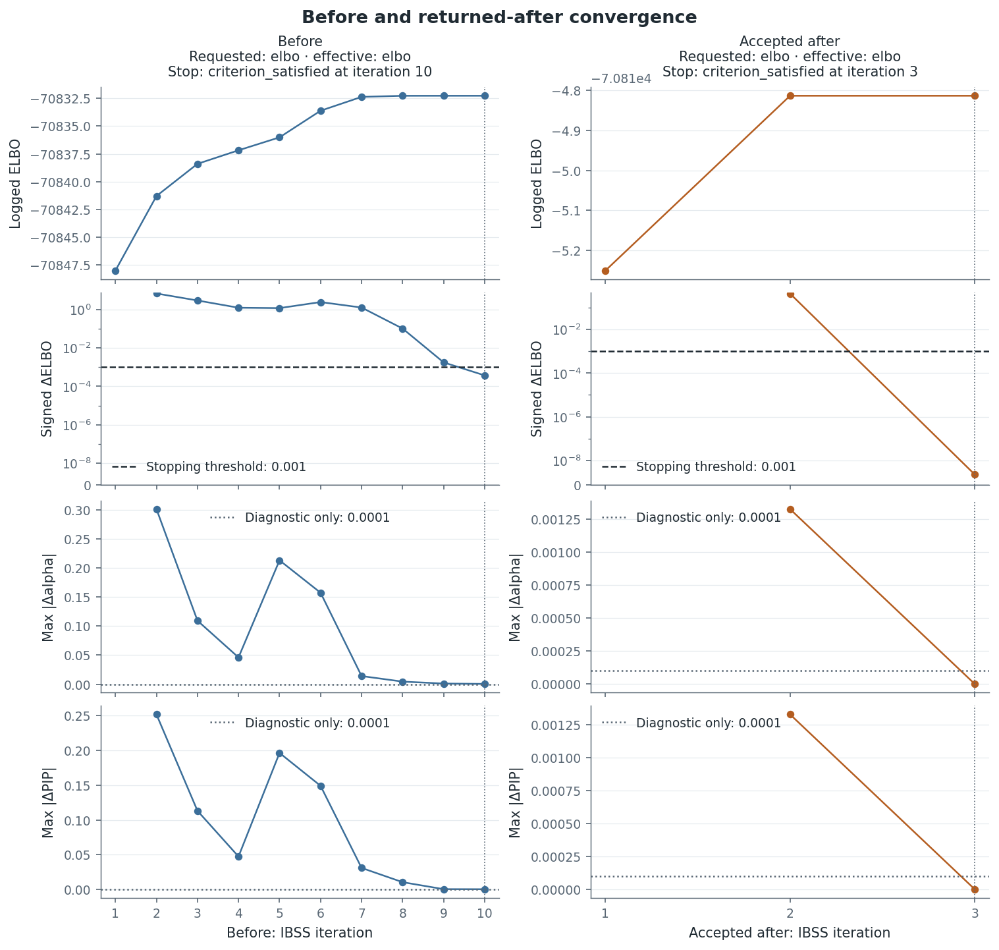
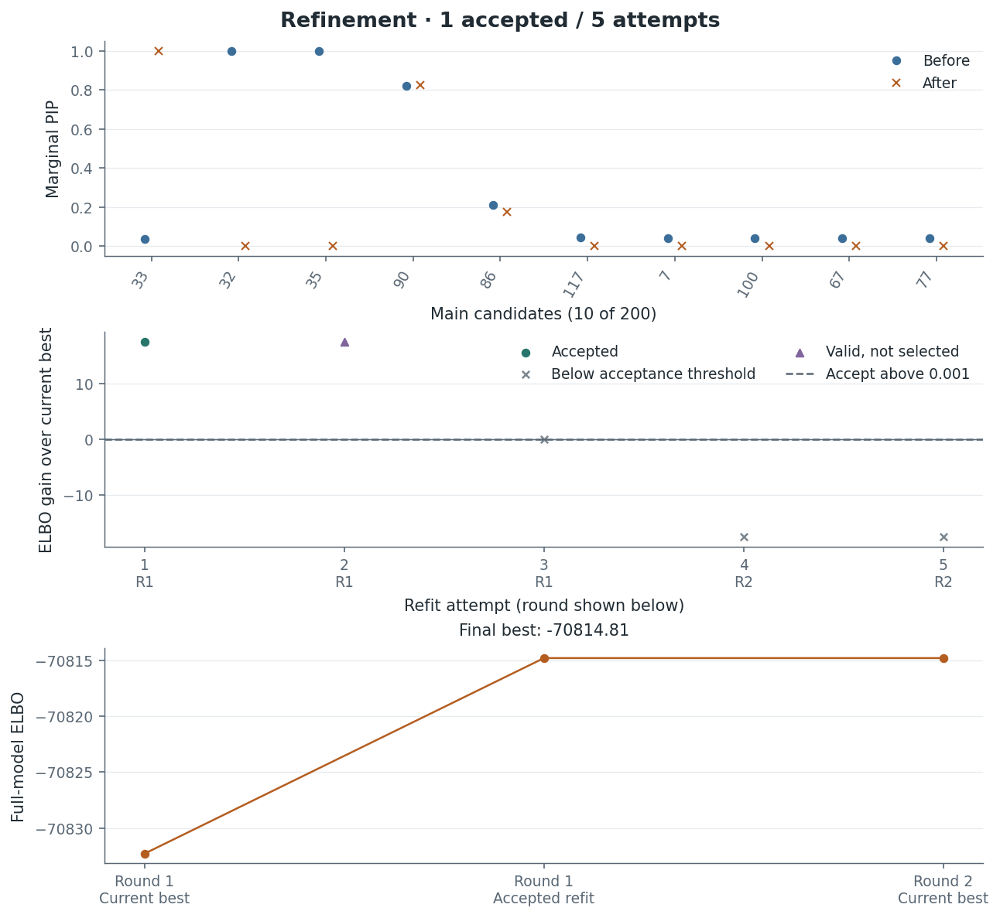
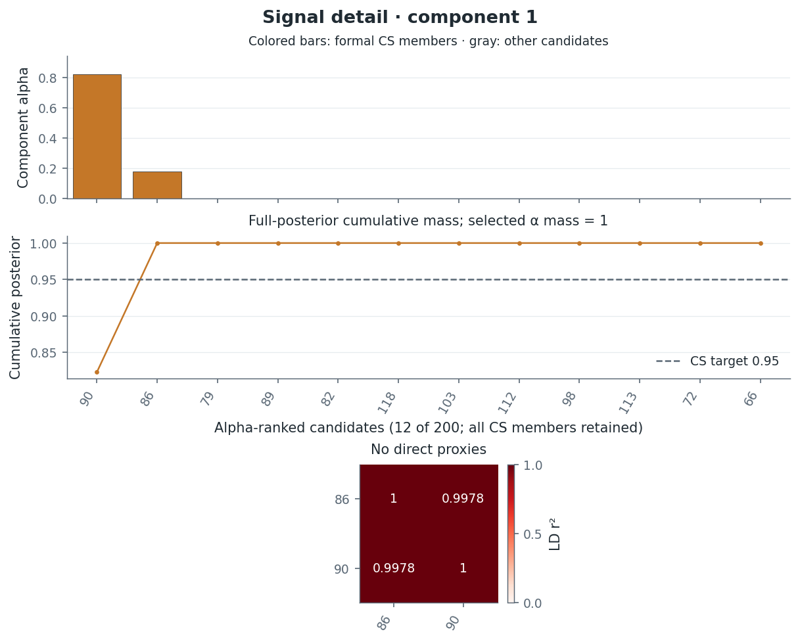

On this page
Toy example
The official susieR FinemappingConvergence fixture illustrates a fit that
satisfies its stopping rule and then improves under refinement. It contains
200 variants and sufficient statistics for a simulated response based on real
genotypes; no individual genotypes are included. This is a solver example,
not a biological association study.
Open the offline report or browse its figure index. The saved analysis uses prusie 0.3.0; input checksums, parameters and exact Python source and native binary identities are in the provenance.
Component IDs below are original zero-based fit rows: component 1 is the
second row of alpha, corresponding to susieR's one-based component 2.
Variant IDs are zero-based positional indices. Genomic positions, alleles,
genome build and gene annotations are unavailable.
Main results and resolution
The refined fit returns two retained credible sets covering two active single-effect components. Each CS carries posterior mass greater than 0.9999, and the leading variants have marginal PIPs close to one.
| Rank | Variant | PIP | Credible set | Note |
|---|---|---|---|---|
| 1 | 33 | 1.000 | Component 2 ({33}) |
Lead; singleton CS |
| 2 | 90 | 0.8228 | Component 1 ({86, 90}) |
Lead within pair |
| 3 | 86 | 0.1772 | Component 1 ({86, 90}) |
Partner within pair |
| 4 | 79 | 8.76e-09 | — | Highest non-member |
PIPs are marginal inclusion probabilities across the active components. The
0.8228 PIP at variant 90 does not indicate weak overall support for component
1: the whole CS {86, 90} carries posterior mass greater than 0.9999, and
the pair splits component-level alpha as approximately 0.823 to 0.177 between
90 and 86. Full-precision values are in the
comparison and
posterior summary.


The locus overview marks CS members and uses one LD panel per CS, each
referenced to its CS top variant: 90 for component 1 and 33 for component 2.
A CS top maximizes its own component's alpha among its CS members; exact
ties use lexical variant ID order, matching
summary["credible_sets"][i]["representative_rule"]. Global marginal PIP
does not select a CS top. Reference IDs, tied IDs, signed r and r² for all
200 variants are exported under locus overview.ld_references in
plot data. The association
track plots a two-sided normal approximation to marginal t statistics derived
from XtX, Xty and yty (degrees of freedom n - 2); these are not
external GWAS z scores.
Resolution
The two signals localize to different precisions:
- Component 2 is resolved to a single variant. CS
{33}is a singleton, purity is 1 by convention and the marginal PIP at 33 is 1 to numerical precision. - Component 1 is not resolved below the pair. CS
{86, 90}has minimum within-CS , so . The two variants are nearly collinear in the supplied LD reference and the posterior mass is split roughly 0.823 to 0.177 between them. The effective number of candidates within the CS is about 1.595; it measures posterior concentration within the CS, not a causal count.
The pairwise absolute LD between the two CS leads (33 and 90) is about 0.532. That value alone does not establish whether the two modeled effects are conditionally distinguishable: the fit already represents them as two separate components. PIP, alpha, r and r² are unitless; effect estimates use the scale of the supplied sufficient statistics. Neither CS size nor the number of retained CS determines the true number of causal effects.
A stopped fit improved by refinement
The baseline permits L=10 single effects and satisfies its ELBO stopping rule
after ten sweeps at tol=0.001. Refinement evaluates five credible-set exclusion
attempts in two rounds, using ten inner fits, and accepts one candidate. The
returned candidate satisfies its inner stopping rule after three sweeps.
The example opts into tracking for both the baseline and refinement, so the
report shows the accepted candidate's three original stage-B sweeps.


The search ranks candidates by their last logged ELBO under the original prior.
Here it rises from −70832.271605 to −70814.813272, a gain of 17.458333.
Its before/after values and gain are recorded in
the analysis summary
under refinement; recomputed post-finalization ELBO is a separate diagnostic.
The convergence and refinement guide
explains the search settings and objective convention. Satisfying an inner
stopping rule does not establish a global optimum. The unsuccessful subsequent
attempts establish only that no executed candidate exceeded the search's
absolute improvement threshold.


| Variant | Initial PIP | Refined PIP | L=12 PIP |
|---|---|---|---|
| 32 | >0.9999 | 0 | >0.9999 |
| 33 | 0.03660 | 1 | 0.04627 |
| 35 | >0.9999 | 0 | >0.9999 |
| 86 | 0.2114 | 0.1772 | 0.2192 |
| 90 | 0.8214 | 0.8228 | 0.8232 |
The initial singleton CS {35} and {32} are replaced by {33}, while
{86,90} remains. Zeros and ones are stored PIPs; >0.9999 denotes an interior
probability close to one. Full-precision values remain in the
comparison.
Neither CS membership nor CS count determines the true number of causal effects.
Component detail
The report presents component 1 before component 2, preserving their original
fit-row identities. The component 1 detail plot shows the within-CS allocation,
cumulative posterior mass and LD r² for the {86, 90} pair.


Sensitivity and LD compatibility

Increasing L from 10 to 12 retains the baseline's three CS. The largest PIP
change over all 200 variants occurs at variant 0, outside the main candidate
view: 0.03856 → 0.04825, an absolute change of 0.009694. Nine active components
without retained CS contribute to the L=12 background; diffuse overlap does
not establish additional localized signals.
The signed LD matrix is normalized from the same in-sample XtX. Diagnostics
use the t-derived statistics with a normal approximation. The matrix is nearly
singular; inspect its recorded regularization and
LD diagnostic records.
A completed assessment flags none of the 200 variants under the recorded joint
rule (log LR > 2 and absolute adjusted z-score > 2). This does not validate an
external LD reference or prove allele alignment. Paired susieR flip-flag
agreement has not been established.
Choose a signal detail
Use the official refined fit's posterior summary and signed LD matrix R,
with rows and columns in the order of summary["variants"]:
from prusie.viz import plot_signal
pair, _, pair_data = plot_signal(
summary, component_id=1, R=R, layout="compact", ld_measure="r2"
)
singleton, _, singleton_data = plot_signal(
summary, component_id=2, R=R, layout="compact", ld_measure="r2"
)
The compact views retain all CS members, show component probabilities and full
posterior cumulative mass, and display within-CS r². variant_id="90" can
instead select the retained component with the highest alpha for that variant.
The plotting API describes local styles and
exported data. plot_locus uses one LD panel per CS by default; an explicit
reference_variant selects a single reference, no retained CS falls back to the
highest marginal PIP, and missing R produces an unassessed placeholder.
Sources and reproducibility
The fixture metadata identifies
upstream FinemappingConvergence.RData at susieR commit
1f9166cf88ed19c1d6acd4ee53a605ff9505a563, with source SHA256
8b9ac71cd119cd8e9818340fb1152e422d9b7eaefac747058d8087f6c0b5139b.
The packaged reference is pinned to susieR 0.16.6 at
8e56a8e038e989856d106d9ca5175cc664fea9d2. Preserve the
upstream attribution and
full BSD-3-Clause license,
reproduced from the repository third-party notices. The fixture’s original
license stub is also retained unchanged.
From a source checkout with the analysis extra installed, reproduce this
single official example, including baseline, refinement, L=12 sensitivity and
LD diagnostics:
python examples/post_analysis.py --output-dir output/post-analysis --case official
To render the saved numerical results without fitting or running diagnostics:
python examples/post_analysis.py --saved-dir docs/examples/post_analysis \
--output-dir output/rendered-example --case official
Opening the report runs no computations. Keep its directory together: it includes PNG/SVG figures, full-precision CSV tables, lossless JSON/NPZ records, input and software provenance, license files and a figure index. Rendering saved records preserves their numerical software identity and records the renderer separately.